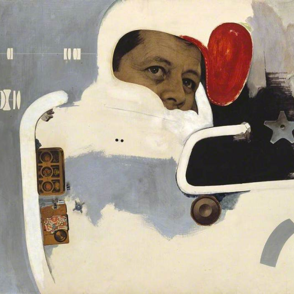
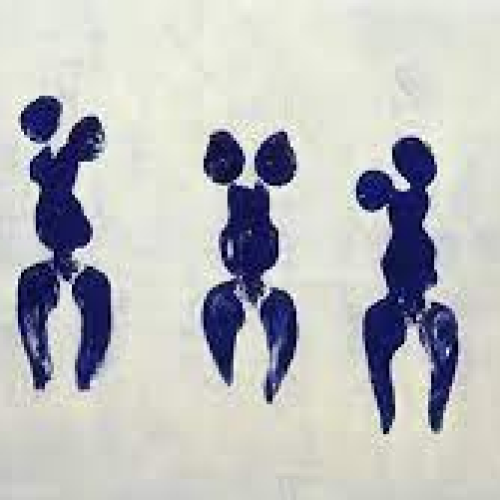
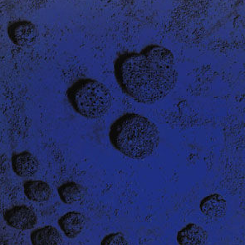
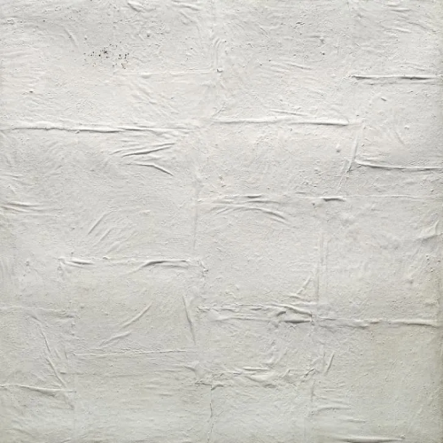
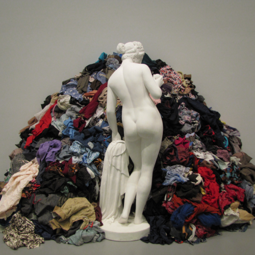
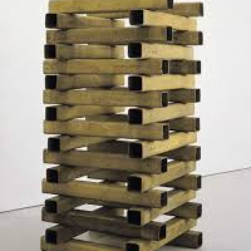

R E T R O V I S I O N
artisti
galleria
correnti
GALLERIA
A. WARHOL
BIG ELECTRIC CHAIR
1967
CAMPBELL’S SOUP CANS
1962
R. HAMILTON
JUST WHAT IS IT THAT MAKES TODAY’S
HOMES SO DIFFERENT, SO APPEALING?
1956

TOWARDS A DEFINITIVE
STATEMENTON THE COMING (...)
1962
Y. KLEIN

ANTROPOMETRIE
1960

RE 11
1960
P. MANZONI

ACHROME
1957-1963
MERDA D’ARTISTA
1961
YOKO ONO
CUT PIECE
1967
EYEBLINK
1966
A. KAPROW
YARD
1961
FLUIDS
1967
M. PISTOLETTI

LA VENERE DEGLI STRACCI
1967
ORCHESTRA DI STRACCI
1968
A. BOETTI
IO CHE PRENDO IL SOLE
1969

CATASTA
1966